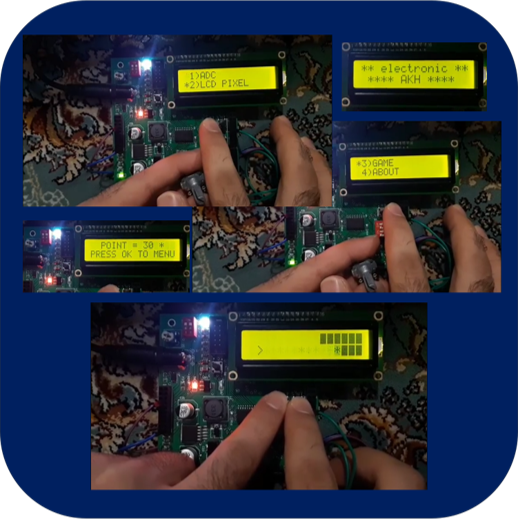

Hello Dear,
My name is Alireza Khajehvandi
MACHINE LEARNING, DEEP LEARNING, EMBEDDED SYSTEMS & EMBEDDED AI ENGINEER
Low-Light Image Enhancement with Deep Neural Networks
This project introduces an advanced technique for improving the
quality of low-light images, effectively mitigating issues
associated with underexposed or dimly lit photographs. By leveraging
lightweight convolutional neural networks (CNNs), this approach
significantly improves image quality without requiring reference
images. Instead, it makes use of existing datasets from previous
works. The results underscore the efficiency of the lightweight
network, which contains substantially fewer parameters, making it
ideal for real-time applications. This project highlights my
expertise in deep learning for image enhancement and its potential
for real-world scenarios.
Face Detection and Recognition with OpenCV Cascade Classifier and
ResNet in Python
This project is a multi-step endeavor that seamlessly integrates
computer vision and deep learning techniques to achieve face
detection and recognition. The application utilizes the Cascade
Classifier from OpenCV to locate faces within images or video
streams. It then crops and displays these detected faces in a
designated area. Subsequently, the program employs a ResNet-based
deep learning model, implemented using the Keras library, to train
on a custom dataset of collected facial images. This model is
trained to recognize individual faces, enabling the system to
identify and classify faces in real-time.
Melanoma Detection and Segmentation: Combining Image Processing and
Machine Learning
This project is a multi-step endeavor that seamlessly integrates
computer vision and deep learning techniques to achieve face
detection and recognition. The application utilizes the Cascade
Classifier from OpenCV to locate faces within images or video
streams. It then crops and displays these detected faces in a
designated area. Subsequently, the program employs a ResNet-based
deep learning model, implemented using the Keras library, to train
on a custom dataset of collected facial images. This model is
trained to recognize individual faces, enabling the system to
identify and classify faces in real-time.
Fire Detection and Segmentation in Images using HSV Color Filtering
This project revolves around the creation of an image processing
application aimed at detecting and segmenting fire within images.
The technique involves filtering images in the HSV (Hue, Saturation,
Value) color space to isolate and highlight the regions containing
fire. Using color thresholding, the system effectively converts the
rest of the image to black, leaving only the fire regions visible.
This project serves as a foundational exploration of image
processing concepts, particularly color-based thresholding, and is a
testament to my proficiency in this field.
Polynomial Equation Plotter in C++: Customizable Graphs with Range,
Color, and Thickness Control
This project represents the creation of a feature-rich polynomial
equation plotting utility, meticulously engineered to provide a
comprehensive and customizable graphing experience. This utility can
accept polynomial equations as input, offering users the flexibility
to define the equation's coefficients. It enables users to customize
various graphing settings, including setting the display range,
selecting graph colors, adjusting line thickness, and scaling the
graph for better visualization. This project showcases my expertise
in C++ programming, mathematical modeling, and data visualization,
emphasizing my ability to create adaptable and user-friendly
software tools.
Fundamental Image Processing Utility with C++: Contrast, Brightness,
Inversion, Cropping, and Grayscale Conversion
This project represents the creation of a feature-rich image
processing utility, meticulously engineered to facilitate a wide
range of fundamental image enhancement and manipulation tasks. This
utility provides an intuitive user interface for loading images and
intelligently performing operations such as contrast adjustment,
brightness enhancement, image inversion, region cropping, and
grayscale conversion. The processed results are displayed in
real-time, offering an efficient and seamless image editing
experience. This project showcases my expertise in C++ programming
and image processing, underscoring my ability to create practical
and user-friendly software tools.
Texture Segmentation and Classification through Convolutional Neural
Networks
In this project, I conducted comprehensive texture segmentation and
classification within a multispectral image. To achieve this, I
subdivided the image into smaller patches, each encapsulating a
unique texture, and employed a Convolutional Neural Network (CNN)
for training and testing. The CNN successfully categorized these
patches into five distinct classes, corresponding to specific
textures present in the image. The result was a color-coded
representation of the segmented textures, demonstrating my expertise
in multispectral image analysis and advanced deep learning
techniques for accurate classification and texture segmentation,
with applications in computer vision and image analysis.
Persian Handwritten Digit Recognition Using MNIST-Inspired Neural
Network
I developed a system for recognizing handwritten Persian digits by
training a neural network inspired by the architecture commonly used
for the MNIST dataset. I utilized this network to learn from a
custom dataset of handwritten Persian digits, enabling it to
accurately recognize and classify Persian characters. After the
training phase, I created a user interface with Tkinter, allowing
users to input images containing handwritten Persian digits. The
system then processed these images, detected and recognized the
handwritten digits, and displayed the identified numbers alongside
the input image. This project demonstrates my proficiency in
adapting neural networks for practical applications in Persian
handwritten digit recognition.
Linear Regression using Keras for Function Approximation
In this project, I aimed to create a machine learning model for
function approximation using linear regression with Keras, a popular
deep learning library in Python. The primary motivation behind this
endeavor was to showcase my ability to work with neural networks and
apply them to real-world problems.
Multi-Channel Data Logger with Wireless Transmission and PC
Visualization and Control
This project represents the development of a comprehensive
multi-channel data logging system with a wireless data transmission
component and a user-friendly computer interface. The system
comprises two boards: the first board accommodates analog data
acquisition channels and sensors, processes the data, and wirelessly
transmits it to the second board via an NRF module. The second board
is connected to a computer through a serial protocol, where a
custom-written software application, LabVIEW, receives and displays
the transmitted data. The software offers versatile features,
including real-time data visualization, adjustable data rates, and
the capability to save data into user-defined file formats (e.g.,
Excel). This project exemplifies my expertise in both software
development and hardware implementation, highlighting seamless
communication between the two.
LabVIEW-Based Multi-Functional Software for Split Air Conditioner
Testing
I have designed and developed a LabVIEW software system tailored for
split air conditioner testing. This comprehensive solution enables
seamless data acquisition, real-time visualization, and advanced
analysis. It communicates effortlessly with our custom ARM STM32
processor-based board through serial and RS232 protocols, allowing
for the collection of various sensor data, including temperature,
pressure, humidity, and multiple electrical parameters such as
voltage, current, and power. The software empowers users with the
flexibility to define test parameters, analyze data, and interface
with PLCs via Modbus for control data integration. This all-in-one
platform simplifies and enhances the split air conditioner testing
process while ensuring thorough data management and analysis
LabVIEW Software for Refrigerator Testing and Control
I've developed a LabVIEW software specifically designed for
comprehensive refrigerator testing. This versatile software
establishes communication with a custom ARM STM32-based board via
serial and RS232 protocols, enabling seamless data acquisition,
including temperature, humidity, and electrical parameter
measurements. It offers real-time data visualization, data storage,
and user-defined test settings. The software also provides data
analysis capabilities, empowering users to fine-tune their testing
parameters, control the testing environment, and create detailed
reports
LabVIEW Software for Washing Machine Testing
I've exclusively designed a LabVIEW software for precise washing
machine testing. This software seamlessly communicates with the
testing hardware through serial and RS232 protocols, expertly
collecting data from various sensors, including temperature,
electrical parameters, water pressure, and flow sensors. Tailored
with a specialized user interface for washing machine testing, it
simplifies parameter configuration, testing environment control,
detailed data analysis, and seamless data storage. Users can create
precise test commands, dynamically oversee the testing environment,
and generate comprehensive reports, making this versatile software
an invaluable tool for executing precise and customized washing
machine testing procedures.
LabVIEW Software for Vacuum Cleaner Testing
I've meticulously developed a LabVIEW software tailored exclusively
for testing vacuum cleaners and precisely measuring their suction
power, which includes airflow and electrical parameters. This
software seamlessly communicates with a custom-designed board via
serial and RS232 protocols, enabling it to collect parameters such
as temperature, airflow, airflow rate, and electrical data. Through
a command sent to an electrical valve located within the vacuum
cleaner's air path, the software effectively controls airflow to
assess the vacuum cleaner's suction power. Data collection occurs at
various points, determined by airflow rate measurements, and various
calculated parameters are derived as per the testing standards.
These calculations include the measurement of the vacuum cleaner's
power consumption, suction power, input power, and output power. The
software provides comprehensive capabilities for real-time data
display, storage, automatic control, and data acquisition during the
testing process, ensuring precision and efficiency in conducting
vacuum cleaner testing procedures.
Multi-Purpose Testing, Measurement, and Datalogging Board
I have designed a versatile board specifically for testing and
measuring home appliances, such as refrigerators, washing machines,
vacuum cleaners, and similar products. This board incorporates a
variety of features to cater to the diverse needs of users,
including multiple digital inputs, 4-20mA/0-10V analog inputs,
analog voltage inputs, and multiple digital outputs through relays
and solid-state relays (SSRs). Additionally, it provides analog
output capabilities. With these features, the board is capable of
interfacing with a wide range of sensors and controlling various
equipment. The microcontroller used in this board is the ARM
STM32F107, and it can connect to a computer via serial and RS232
communication to link up with relevant software applications for
data sampling, monitoring, and control in various projects.
Furthermore, this board is equipped to measure electrical parameters
such as voltage, current, and power.
Comprehensive AVR Microcontroller Development Board for Educational
and Experimental Applications
I've designed a versatile educational and experimental development
board based on the AVR microcontroller. This board serves as a
comprehensive platform for configuring all the microcontroller's
peripherals. It facilitates the connection of various display units,
including seven-segment displays and character LCDs. It provides
access to essential pins, such as SPI, I2C, GPIO, and more. The
presence of LEDs and micro switches simplifies testing procedures,
making it ideal for educational and laboratory work. This board
offers an array of opportunities for hands-on learning and can be a
valuable asset for a variety of projects
Integrated Household Appliance Thermal Performance Testing Solution
Our custom-designed hardware and software system is tailored for
precise thermal performance testing of household appliances. A
dedicated testing structure, typically featuring 5 faces, is
equipped with temperature sensors, ensuring comprehensive coverage
of each face. These sensors are strategically positioned with a 10
cm spacing to provide accurate readings for each surface. As the
appliance operates within this controlled environment, the software
continuously monitors the matrix of temperature sensors, checking
against user-defined temperature thresholds. If any sensor exceeds
the set limits, the product is deemed defective; otherwise, the test
is successful. This versatile solution facilitates efficient testing
and report generation, ensuring quality control in household
appliance production.
ESP32-Based Potentiometer Measurement and Data Transmission Project
I've developed a straightforward laboratory experiment using an
ESP32 module to measure potentiometer values. This project involves
measuring a potentiometer's value and transmitting it to a LabVIEW
software over a network using UDP. Subsequently, the LabVIEW
software displays and graphs the digital potentiometer value. The
primary objective of this project is to gain proficiency with the
ESP32 module, network communication, and data transmission. This
knowledge will prove invaluable for future projects utilizing
similar technologies
Distance Estimation Between Boards Using AVR Microcontroller and
Bluetooth Modules
This project demonstrates the development of a sophisticated
distance estimation system, comprising two distinct boards with
specialized functions. The master board is equipped with an AVR
microcontroller, an HM-10 Bluetooth module, a buzzer, and a
character display. The slave board consists of a Bluetooth module
and a battery for power supply. When the slave board moves away from
the master board, the buzzer on the master board activates, and the
character display indicates the distance between them. This distance
estimation is achieved through signal strength estimation
transmitted via Bluetooth modules. A weaker signal suggests that the
boards have moved apart, while a stronger signal indicates their
proximity.
RFID-Based Door Control System with AVR Microcontroller
This project showcases my expertise in embedded systems design and
access control technology. This system enables secure access
control, allowing authorized users to open and close the door using
RFID tags. The door is simulated using a servo motor, and when an
authorized RFID tag is presented, the system issues the command to
open the door. In case of an unauthorized tag, an "invalid card"
message is displayed on the screen.
Implementation of a Temperature Data Logger with AVR Microcontroller
for Monitoring and Visualization on a Computer Using LabVIEW Software
This project demonstrates my ability to design and implement a
comprehensive temperature data logging system. This system not only
displays temperature readings but also enables data storage and
real-time monitoring on a computer through LabVIEW software. In this
project, the DS18B20 sensor has been employed for temperature
measurement.
AVR Microcontroller-Based Interactive Menu System with Gaming
Capability

This project serves as a testament to my proficiency in
microcontroller programming and my ability to create a dynamic menu
system. One of the menus within this system includes a captivating
game that users can select and play.